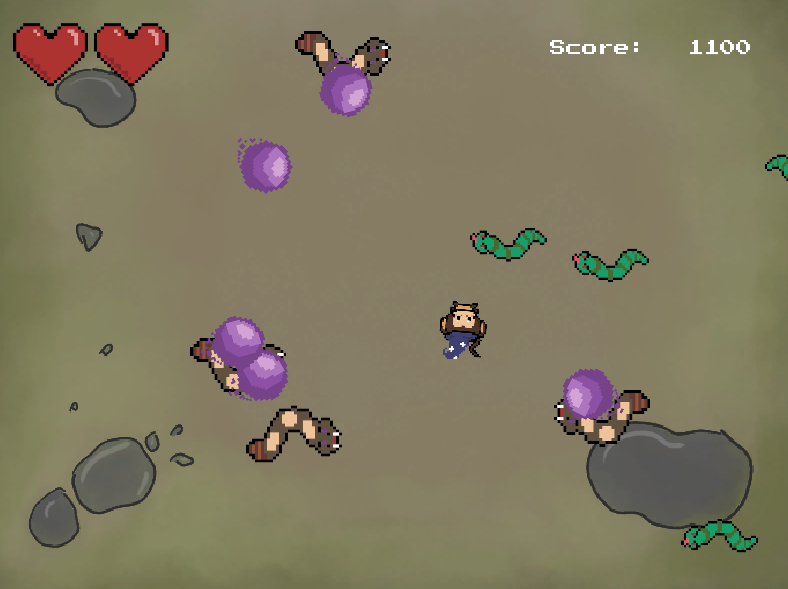
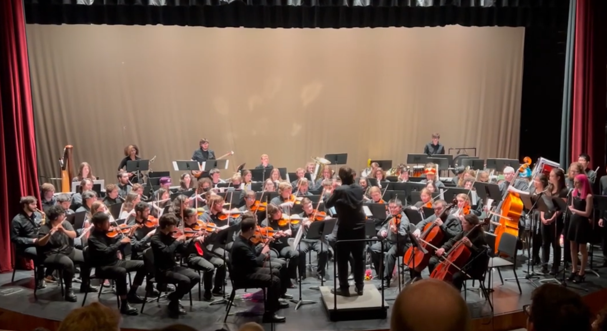
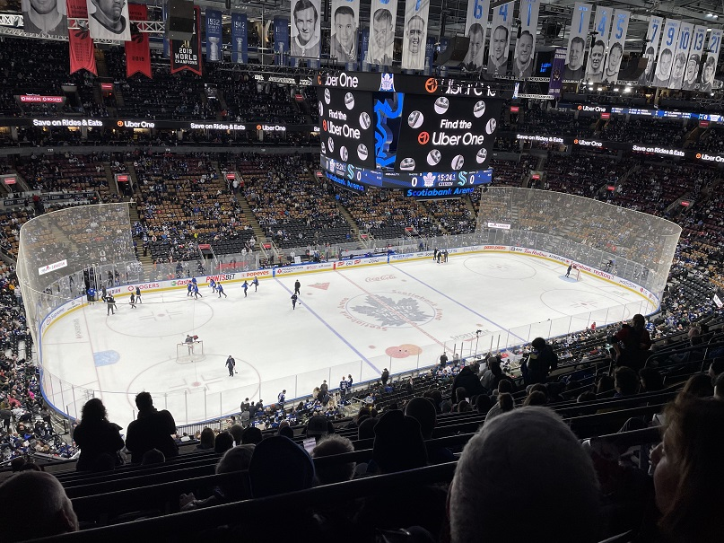

Games
I love everything surrounding the medium of video games. I enjoy playing/trying new games, reviewing/analyzing games, and even designing/developing games. Some personal favorites of mine include Hollow Knight, Mario Kart, and Elden Ring. Here's a screenshot from a game I created in one of my classes.
Music
I've been practicing a few instruments in the past few years, those being saxophone, electric bass, and piano. I enjoy listening music and trying to play instrumentals that I love. I'm also a member of RIT's GSO as an alto saxophone player. Here's a photo from our Spring 2023 concert.
Cooking
I've been cooking since high school, and since then I've found some of my favorite dishes to make. I love to make smash burgers, enchiladas, stuffed pobalanos, and various pasta dishes.

Sports
I've loved sports for all my life, whether it be playing or watching. I've played many sports in my life, but recently I've been playing basketball, volleyball, and golf. I also enjoy skiing/snowboarding. I most actively follow baseball, as I love the game and the stats assosiated with it, but I've also been watching hockey recently. I recently traveled to Toronto with my girlfriend to see a Maple Leafs game and a Raptors game.
Coding
I've always loved learning, and learning to code during my degree has been a rewarding experience. Between personal projects, school, and previous work, I've been learning a wide variety of concepts. I've wrote the entire front-end for this website, and I've set-up the host server using Apache. Despite its frustrations, I enjoy the satisfaction of problem solving through code. You can read more about my coding experience on my projects page and on my resume.